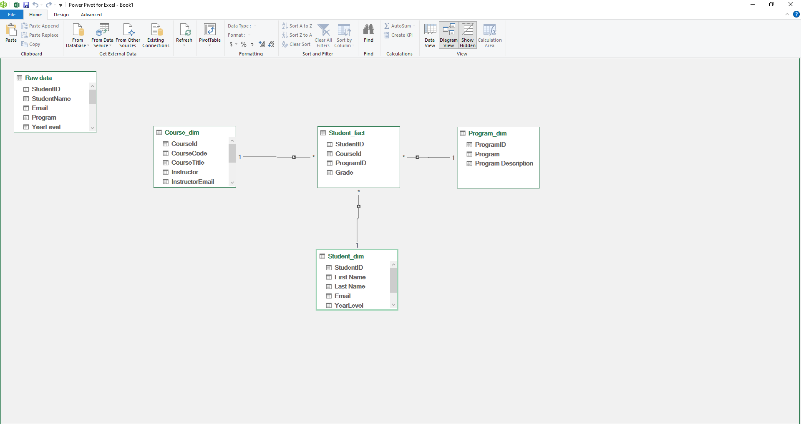

Overview
A task focused on the application of Microsoft Excel Power Query for data cleaning, transformation, and normalization, highlighting the process of converting raw data into structured tables and building a relational data model, along with the project scope, methodology, and resulting outputs in a clear and professional manner.
01
Initial Data Processing
- Load the dataset into Excel Power Query
- Review column profiles and data structure
- Assign correct data types (text, number, date)
- Remove duplicate records
- Rename columns for clarity and consistency
- Split and transform columns as needed (e.g., names, schedule)
02
Normalization Process
- Identify entities (e.g., Students, Courses, Programs)
- Separate data into multiple related tables
- Create unique IDs for each entity
- Establish primary and foreign key relationships
- Organize tables into a structured relational model
- Prepare the dataset for analysis and reporting
03
Output and Findings
- Review normalized tables for accuracy and consistency
- Verify primary and foreign key relationships
- Ensure no duplicate records across all tables
- Present data in a clean and structured format
- Load finalized tables into separate worksheets
- Prepare outputs for further analysis and reporting
04
Output Files
Student Fact Table

Normalization
